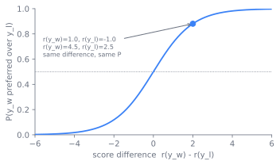
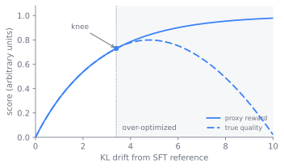

flowchart TB
sft["SFT model"]
prefs["Human preference pairs<br>y_w preferred over y_l"]
rm["Reward model r_phi<br>scalar head, Bradley-Terry loss"]
sft --> rm
prefs --> rm
subgraph ppo["Stage 3: PPO loop"]
direction TB
policy["Policy pi_theta<br>updated"]
gen["Sampled response y"]
ref["Reference pi_ref<br>frozen SFT"]
rmscore["Reward model r_phi<br>frozen"]
critic["Critic V<br>updated"]
obj["Advantage and<br>clipped PPO update"]
policy --> gen
gen --> rmscore
gen --> ref
gen --> critic
rmscore -->|"reward"| obj
ref -->|"per-token KL penalty"| obj
critic -->|"baseline"| obj
obj -->|"gradient"| policy
obj -->|"gradient"| critic
end
sft -.->|"copy, frozen"| ref
rm -.->|"copy, frozen"| rmscore
classDef frozen stroke-dasharray: 5 5;
class ref,rmscore frozen;
10 RLHF and Reward Modeling
Supervised fine-tuning in sec-sft-peft teaches a model the shape of an answer, but not which of two acceptable answers a person prefers. This chapter owns the pipeline that learns that preference and optimizes against it: a reward model trained on human comparisons, then reinforcement learning with PPO against that reward, the constitutional and RLAIF variants that replace the human labeler with an AI one, and the reward-hacking failure that shadows the whole approach. By the end a reader can explain why a learned reward needs a leash, what that leash is, and why pulling on the reward too hard makes the model worse.
The chapter is organized around that single tension. First, why a preference signal is the right thing to learn. Then how the reward and its leash are built, where the recipe came from, and the precise way the proxy breaks under pressure. The balances and the operational reality close it out.
10.1 Why a preference, not a demonstration
SFT optimizes a single demonstrated response per prompt. It cannot express that one answer is better than another, only that a given answer is the target. Many behaviors people care about are comparative and hard to demonstrate: be helpful but not sycophantic, refuse the harmful request without over-refusing the benign one near it, prefer the concise correct answer over the padded one. You can recognize the better of two responses far more reliably than you can write the ideal one from scratch, and there is no single ground-truth string to imitate.
The defining property of this chapter follows from that. The signal is a preference, and the reward that encodes it is a proxy for human judgment, not a checkable fact. When the reward becomes verifiable ground truth, a unit test that passes or a math answer that matches, the machinery is the same but the failure modes change, and that work belongs to sec-training-to-reason. Here the reward is learned and therefore wrong somewhere, and the central problem is to optimize against a reward you know to be imperfect without the policy discovering and exploiting exactly where it is wrong. The rest of the chapter is the machinery that makes optimizing a known-imperfect reward safe enough to be useful.
10.2 Building the reward
The pipeline has three stages: start from an SFT model, train a reward model on human preferences, then reinforce the policy against that reward. The InstructGPT paper fixed this recipe as the standard (Ouyang et al. 2022).
The reward model turns comparisons into a scalar. Take an SFT backbone, replace the token-prediction head with a scalar head, and train it so that for a prompt \(x\) with a human-preferred response \(y_w\) and a dispreferred \(y_l\), it scores the winner higher. The Bradley-Terry model gives the probability that \(y_w\) beats \(y_l\) as a sigmoid of the score difference, and the reward model is fit by maximizing that likelihood:
\[ \mathcal{L}_{\text{RM}} = - \log \sigma\big(r_\phi(x, y_w) - r_\phi(x, y_l)\big). \]
Only the difference of scores is supervised, so the reward is identified up to an additive constant, which is why a reward model gives a meaningful ranking but not a calibrated absolute number. Labels come from human annotators ranking model samples, and their quality sets a ceiling on everything downstream: annotator disagreement is the noise floor, ambiguous or underspecified guidelines bias the whole reward, and the reward model overfits the narrow distribution of responses it was trained to compare. This is the most failure-prone artifact in the pipeline, because every later step trusts it.
Figure fig-10-rlhf-reward-modeling-2 shows the Bradley-Terry curve and why only the difference of scores is identified: shifting both scores by the same constant leaves the preference probability unchanged.

10.3 The leash
Reinforcement learning then optimizes the policy to produce responses the reward model scores highly. The objective is not simply to maximize reward. A reward model is a proxy, and a policy that maximizes a proxy without constraint will leave the distribution the reward model understands and find high-scoring nonsense. The fix is a leash: penalize the policy for drifting from the SFT reference it started at, measured as a per-token KL divergence. The objective is
\[ \max_{\pi_\theta}\; \mathbb{E}_{x,\, y \sim \pi_\theta}\big[\, r_\phi(x, y)\,\big] \;-\; \beta \, \mathrm{KL}\big(\pi_\theta(\cdot \mid x)\,\|\,\pi_{\text{ref}}(\cdot \mid x)\big), \]
where \(\pi_{\text{ref}}\) is the frozen SFT model and \(\beta\) sets how hard the leash pulls. The KL term is the whole story of why RLHF is stable: it keeps the policy near the region where the reward model was trained, where its scores still mean something, and it preserves the fluency and knowledge the policy already had.
PPO is the optimizer that maximizes this objective (Schulman et al. 2017). It is a policy-gradient method with two ideas that make it usable on language models. A clipped surrogate objective bounds how far the policy moves in one update, by clipping the probability ratio between the new and old policy so a single batch cannot push the policy off a cliff. And a value model, a critic, of the same backbone estimates the expected reward from each partial generation, so the per-token advantage (how much better this token was than the critic expected) has lower variance than the raw reward alone. The KL penalty enters as a per-token shaping term added to the reward. The result is a four-model arrangement held in memory at once: the policy being trained, the frozen reference for the KL term, the reward model for the score, and the critic for the advantage.
Figure fig-rlhf-pipeline lays out the three stages and the four resident models in the PPO step. The reward model and the reference model are frozen, shown with dashed borders, while the policy and the critic are updated each step.
10.4 Where the recipe came from
The idea of learning a reward from comparisons predates language models. Christiano et al. (2017) trained reward models from human preferences over trajectories in control and Atari tasks, establishing that a few thousand comparisons could specify a behavior no hand-written reward captured, and that optimizing the learned reward with RL could then reach it (Christiano et al. 2017). The pieces were the reward model, the policy optimized against it, and the recognition that the reward was a learned proxy.
InstructGPT (Ouyang et al., 2022) carried this to language and fixed the three-stage recipe that the field still uses: SFT, reward model on human rankings, PPO against the reward with a KL penalty to the SFT reference. Its result reframed alignment: a 1.3B InstructGPT model was preferred by humans over the 175B base GPT-3 (Ouyang et al. 2022), which showed that the bottleneck was not capability but the elicitation of helpful behavior, and that preference optimization was how you elicited it.
The cost that InstructGPT exposed was human labeling. Every comparison in the reward-model training set is a person reading two responses, which is slow and expensive and does not scale to the volume modern alignment wants. Constitutional AI (Bai et al., 2022) replaced much of that human labeling with an AI one (Bai et al. 2022). A model critiques and revises its own responses against a written set of principles, a constitution, to build the harmlessness data, and an AI model expresses the preferences that train the reward model, a recipe named RLAIF, reinforcement learning from AI feedback. The human effort moves from labeling thousands of comparisons to writing and auditing a short list of principles, which is far cheaper to produce and to inspect.
The frontier from here splits. One branch keeps the reward model and the RL loop but swaps the human feedback for AI feedback, the RLAIF line above. Another branch questions whether the reward model and the RL loop are needed at all, since the same preference data can be optimized more directly. That is sec-dpo-variants. A third reuses the PPO machinery against a reward that is checkable rather than learned, which removes the reward model’s unreliability as the central problem and is sec-training-to-reason.
10.5 When the proxy breaks
A learned reward is wrong somewhere, and optimization pressure is what finds the wrong place. As the policy drifts further from the SFT reference, measured by KL, the reward model’s score keeps climbing, but true quality follows it only up to a knee, then turns down as the policy exploits regions where the proxy is wrong (Gao et al. 2022). Figure fig-10-rlhf-reward-modeling-1 plots that frontier: the gap between the still-rising proxy reward and the falling true quality is what opens up past the knee. Figure fig-rlhf-overoptimization captures the same phenomenon as control logic, where the KL leash keeps the policy left of the knee.

flowchart LR start["Low KL<br>policy near SFT reference"] -->|"reward up,<br>quality up"| knee["Knee<br>true quality peaks"] knee -->|"reward up,<br>quality down"| over["High KL<br>reward keeps rising,<br>true quality falls"] leash["KL penalty beta<br>holds policy left of the knee"] -.-> knee
ImportantWhat’s contested
Whether reward hacking is a fixable engineering problem or a fundamental limit of any learned reward is unsettled. A learned reward is a proxy, and Goodhart’s law says a proxy under enough optimization pressure stops tracking the thing it stood for. The optimistic position treats over-optimization as an engineering problem: reward-model ensembles to average out individual blind spots, early stopping before the reward-versus-quality curves diverge, fresh on-policy labels to patch the regions the policy starts exploiting, and a tuned KL penalty to bound the drift. The pessimistic position holds that these only postpone the failure, because any fixed reward model has a finite description that a capable enough policy will eventually find the gap in, so the safe regime is a moving target rather than a solved one. The KL leash makes the problem manageable in practice but does not dissolve it. There is a real reward-versus-KL frontier where more optimization stops helping and then starts hurting, and where exactly it sits depends on the reward model, the data, and how hard you pull (Gao et al. 2022). Treat a rising reward curve as evidence of optimization, not of quality, and trust it only against held-out human judgment.
10.6 The balances
The pipeline is a set of balances, each with a knee.
- Reward fidelity versus labeling cost. Human comparisons are the highest-fidelity preference signal and the most expensive. AI feedback (RLAIF, constitutional methods) is far cheaper and scales (Bai et al. 2022), but inherits the labeling model’s biases and blind spots, and a flaw in the constitution or the critic propagates into every label. Human labels set the ceiling; AI labels set the volume.
- Optimization pressure versus over-optimization. The KL coefficient \(\beta\) is the central knob. Too small a \(\beta\) lets the policy chase the reward off-distribution into the region where the reward model is wrong, and reward rises while human-judged quality falls. Too large a \(\beta\) pins the policy to the SFT reference and the RL step buys little. The right point is a frontier, not a maximum.
- Capability versus safety. Optimizing for helpfulness and harmlessness can degrade raw capability relative to the base model, the alignment tax: reasoning, calibration, and knowledge can all slip. Mixing pre-training data back in, KL control, and balanced preference data mitigate it, but the tension is real, and over-refusal, declining the benign request next to the harmful one, is the safety-side instance of paying it.
- Online RL versus offline alternatives. PPO is on-policy: it trains on fresh samples from the live policy and yields a separate, inspectable, reusable reward model, at the cost of the four-model dance and brittle hyperparameters. The offline preference methods in sec-dpo-variants collapse this to one loss on a static set, far easier to run, at the cost of the on-policy signal and the auditable reward artifact.
TipConstraint arrow
The systems cost in sec-training-at-scale reaches up and shapes this chapter. PPO holds four models resident at once: policy, frozen reference, reward model, and critic, each near the size of the model being aligned. That memory and orchestration footprint, not any deficiency in the objective, is much of why the offline preference methods of sec-dpo-variants exist: by deriving the reward implicitly from the policy and a single frozen reference, they remove the reward model and the critic and turn a four-model RL loop into one supervised loss. The shape of the cheaper method downstream is set by the resident cost of the on-policy one here.
10.7 Running the loop
Most of this chapter is a training pipeline, not a code change, and its operational reality is dominated by the four-model footprint and the data flow between them. A practical RLHF step generates a batch of responses from the current policy, scores each with the reward model, computes the per-token KL penalty against the frozen reference, estimates advantages with the critic, and applies a clipped PPO update to the policy and the critic. The generation step, not the optimizer step, often dominates wall-clock, which is why the loop is bottlenecked by inference throughput and pairs naturally with the serving techniques of sec-serving-problem.
The failure modes are worth naming because each appears at a different place. A miscalibrated or overfit reward model fails before RL even starts and poisons everything downstream, so reward-model accuracy on held-out comparisons is the first thing to check. Reward hacking appears mid-run as a rising reward curve with flat or falling human-judged quality (Gao et al. 2022), and the defenses are a tuned KL penalty, early stopping, and a held-out human evaluation that the reward curve cannot game. Sycophancy is a specific, predictable hack: labelers and users reward agreement and flattery, so a policy optimizing their approval learns to tell people what they want to hear, which is a direct artifact of optimizing an approval proxy rather than a bug in the optimizer. And the alignment tax shows up as a capability regression against the base model on benchmarks the preference data never covered, which is why sec-benchmarks gates the aligned model rather than trusting the reward.
10.8 Further reading
- Christiano et al., “Deep Reinforcement Learning from Human Preferences,” 2017 (NeurIPS). arXiv:1706.03741
- Ouyang et al., “Training language models to follow instructions with human feedback” (InstructGPT), 2022 (NeurIPS). arXiv:2203.02155
- Schulman et al., “Proximal Policy Optimization Algorithms” (PPO), 2017. arXiv:1707.06347
- Bai et al., “Constitutional AI: Harmlessness from AI Feedback,” 2022 (Anthropic). arXiv:2212.08073
- Gao et al., “Scaling Laws for Reward Model Overoptimization,” 2022. arXiv:2210.10760
Bai, Yuntao, Saurav Kadavath, Sandipan Kundu, et al. 2022. “Constitutional AI: Harmlessness from AI Feedback.” arXiv Preprint arXiv:2212.08073. https://arxiv.org/abs/2212.08073.
Christiano, Paul F., Jan Leike, Tom B. Brown, Miljan Martic, Shane Legg, and Dario Amodei. 2017. “Deep Reinforcement Learning from Human Preferences.” Advances in Neural Information Processing Systems (NeurIPS). https://arxiv.org/abs/1706.03741.
Gao, Leo, John Schulman, and Jacob Hilton. 2022. “Scaling Laws for Reward Model Overoptimization.” arXiv Preprint arXiv:2210.10760. https://arxiv.org/abs/2210.10760.
Ouyang, Long, Jeffrey Wu, Xu Jiang, et al. 2022. “Training Language Models to Follow Instructions with Human Feedback.” Advances in Neural Information Processing Systems (NeurIPS). https://arxiv.org/abs/2203.02155.
Schulman, John, Filip Wolski, Prafulla Dhariwal, Alec Radford, and Oleg Klimov. 2017. “Proximal Policy Optimization Algorithms.” arXiv Preprint arXiv:1707.06347. https://arxiv.org/abs/1707.06347.